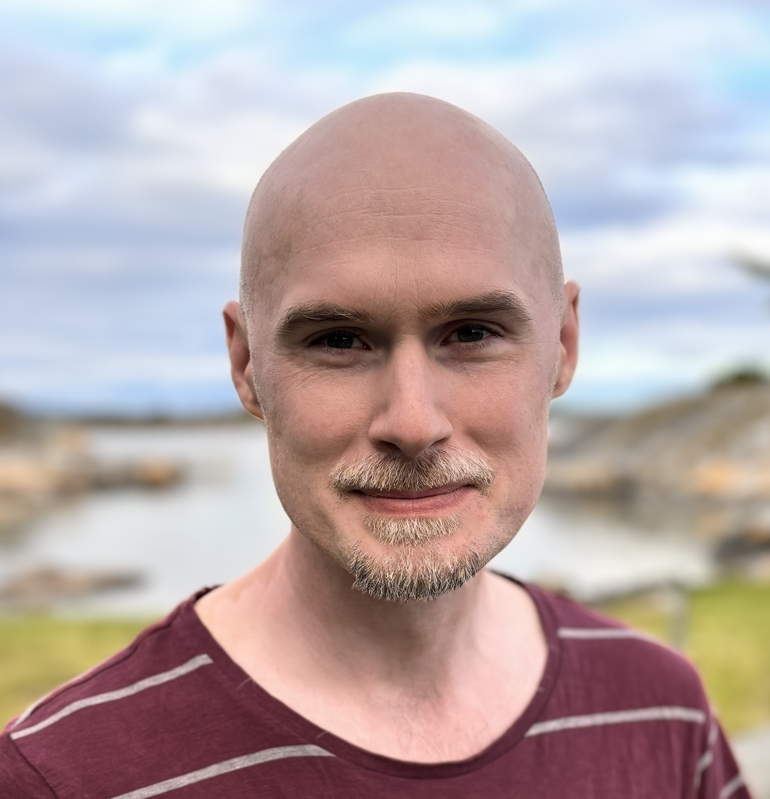

Johan Falk · Falk AI
Jag är forskarutbildad vetenskapsjournalist, fysiker, lärare och författare. Sedan 2024 arbetar jag självständigt med att hjälpa organisationer, skolor och beslutsfattare förstå vad AI-utvecklingen faktiskt innebär.
Jag har följt AI-fältet intensivt sedan 2018 – med ett särskilt fokus på samhällspåverkan, risker och vad det kräver av oss som individer och institutioner.

Jag inledde min karriär som vetenskapsjournalist på Forskning & Framsteg och Dagens Nyheter, efter en licentiatexamen i fysikdidaktik vid Uppsala universitet. Därefter arbetade jag som webbutvecklare och som matte- och fysiklärare på gymnasiet, innan jag 2015 kom till Skolverket.
På Skolverket arbetade jag med kursplaner i matematik innan jag ledde myndighetens AI- och utbildningsteam 2023–2024 – ett arbete som innebar att träffa tusentals lärare, samordna myndigheter, träffa beslutsfattare, och representera myndigheten i TV, radio och tidningar. Det var ett av de mest intensiva och meningsfulla åren i mitt yrkesliv.
I september 2024 startade jag Falk AI för att bredda arbetet utanför utbildningssektorn. Sedan dess har jag hållit hundratals föreläsningar och workshops för allt från kommuner och myndigheter till företag och organisationer – och skrivit min åttonde bok om AI.
Jag lägger det mesta av min tid på att följa AI-utvecklingen: läsa forskning, lyssna på podcaster, undersöka ny teknik, och förstå vad det hela egentligen innebär för samhället. Det är ett heltidsjobb i sig.
Den kunskapen förmedlar jag sedan vidare – i föreläsningar, workshops, rådgivning och böcker. Jag är inte kopplad till något AI-bolag och har ingen kommersiell agenda utöver att få lön genom mitt bolag. Det ger mig frihet att säga vad jag faktiskt tror.
Jag intresserar mig särskilt för konsekvenser av AI-utvecklingen på samhällsnivå. Det omfattar hur tekniken påverkar arbetsmarknaden, utbildning, demokrati och den globala maktbalansen – och även globala hot som tekniken medför. Det handlar också om hur vi bäst navigerar en tid av snabb och svårförutsägbar förändring.
Jag har blivit övertygad om att AI-utvecklingen är vår tids största tekniksskifte. Mitt mål med att lämna arbetet på Skolverket var att hitta en plats där jag kan bidra till arbetet med att hantera globala risker med AI – inte bara hjälpa individer och organisationer att anpassa sig, utan vara en del av lösningen på en större skala.
Johan Falk analyserar hur artificiell intelligens påverkar samhället, och hjälper organisationer och individer att förstå och navigera förändringen. Han är forskarutbildad vetenskapsjournalist, fysiker, lärare och författare av åtta böcker om AI. Han ledde Skolverkets AI-arbete inom utbildning 2023–2024 och fick Guldäpplejuryns särskilda pris 2024 för sina insatser. Johan föreläser och håller workshops för skolor, myndigheter, företag och organisationer i hela Sverige.
Föreläsningar, workshops, rådgivning och böcker om AI för organisationer, skolor och myndigheter.
Initierade och ledde myndighetens AI-team. Föreläste och representerade Skolverket i media och för regeringen.
Ledde utveckling av nationella matematikkursplaner och ansvarade för nationella prov i matematik.
Teknisk webbutveckling och hundratals utbildningsvideor för en global community kring open source.
Sveriges ledande populärvetenskapliga tidskrift. Initierade tidskriftens podcast.